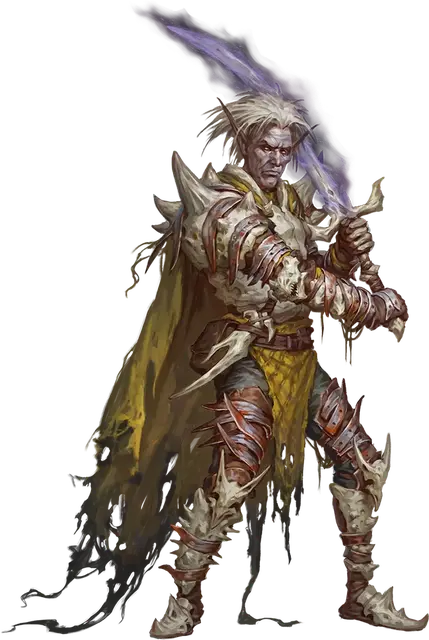

Властитель судьбы Стражей судьбы
Doomguard Doom Lord
Маленький или Средний Гуманоид

Класс Доспеха 18 (латы)
Хиты 202 (27к8 + 81)
Скорость 30 футов
| мод | спас | ||
|---|---|---|---|
| СИЛ | 20 | +5 | +9 |
| ЛОВ | 12 | +1 | +1 |
| ТЕЛ | 16 | +3 | +7 |
| мод | спас | ||
|---|---|---|---|
| ИНТ | 15 | +2 | +2 |
| МДР | 14 | +2 | +2 |
| ХАР | 18 | +4 | +4 |
Иммунитет к урону некротическая энергия
Чувства пассивное Восприятие 16
Языки Общий плюс три языка
Опасность 12 (8400 опыта)
Бонус мастерства +4
Особенности
Аура погибели. Любое существо, начинающее свой ход в пределах 10 футов от властителя судьбы, должно совершить спасбросок Телосложения Сл 16, получая 18 (4к8) урона некротической энергией при провале или половину этого урона при успехе. Если властитель судьбы дееспособен, он может подавить или высвободить эту ауру в начале своего хода (никаких действий не требуется).
Осадный монстр. Властитель наносит двойной урон объектам и сооружениям.
Действия
Мультиатака. Властитель судьбы совершает две атаки Энтропийным двуручным мечом или Энтропийным копьём.
Энтропийный двуручный меч. . Рукопашная атака оружием: +9 к попаданию, досягаемость 5 футов, одна цель. Попадание: 12 (2к6 + 5) рубящего урона плюс 10 (3к6) урона некротической энергией. Тело существа, убитого этой атакой, и всё, он нёс или носил, за исключением магических предметов, обращается в пепел.
Энтропийное копьё. . Рукопашная или Дальнобойная атака оружием: +9 к попаданию, досягаемость 5 футов или дистанция 30/120 футов, одна цель. Попадание: 8 (1к6 + 5) колющего урона плюс 14 (4к6) урона некротической энергией. Тело существа, убитого этой атакой, и всё, он нёс или носил, за исключением магических предметов, обращается в пепел.
Описание
"Шеф, не все фракции Сигила одинаковы. У тебя есть те, кто заговорит тебе зубы, а потом ударит тебя дубинкой, и те, кто ударит тебя дубинкой, а потом заговорит тебе зубы. Это важное различие.”
– Морте
Властитель судьбы - самые высокопоставленные члены Стражей судьбы, олицетворяющие неизбежный распад мультивселенной в прах. Одно лишь присутствие Властитель судьбы лишает жизни более слабых врагов, и даже самые прочные стены рушатся перед ними.